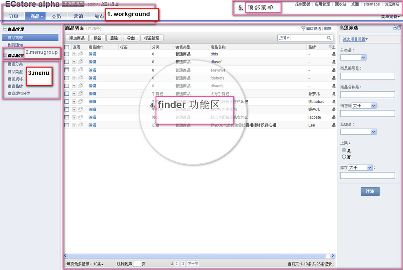
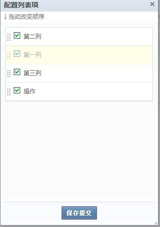
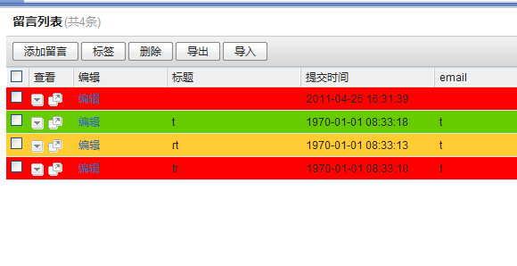
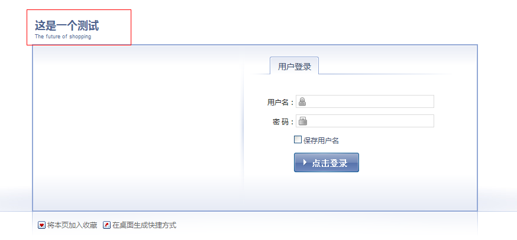

desktop开发指南
desktop简介
- desktop是基于base的一个独立的app。
- 通俗的讲desktop就是后台管理系统。
- desktop还有以下特点：
- desktop提供了常用的后台操作实现机制，这大大节省了你后台开发的时间。
- desktop提供一个带有权限和工作流的操作环境。
- desktop作为ecos的一个基础app一般不单独存在，是其他app操作流程的载体。
- 安装desktop后，访问后台，会出现如下登录界面：
desktop.xml说明
- desktop.xml是后台菜单“显示”文件。
- 装了desktop这个app，就能识别其他app目录下的desktop.xml文件。
- 这个文件必须列出所有后台看见或看不见的控制器，否则除非是超级管理员，任何其他非超级管理员desktop用户无法访问这些控制器。
- desktop.xml的基本结构是如下：
<desktop>
<panelgroup id="other" icon="panel-other.png" order="100">其他</panelgroup>
...
<adminpanel group="desktop_other" permission="other" controller='admin_member_attr' action='index' display='true'>会员注册项</adminpanel>
...
<permissions>
<permission id="shipment" display='true'>配送设置</permission>
...
</permissions>
<workground name="商品" id="b2c.wrokground.goods" controller="admin_goods" action="index" order="20">
<menugroup name="商品管理">
<menu controller='admin_goods_editor' action='add' permission='goods' display='false' order='10'>添加商品</menu>
...
</menugroup>
...
</workground>
...
</desktop>
- desktop.xml不一定包含上面的所有标签，在符合语法规则的前提下，可以根据自己的需求任意增减标签。
- 语法规则以及各个标签和标签属性含义如下：
- desktop
每个 desktop.xml 的根标签
- panelgroup
控制面板里的组其属性含义如下：
- id:控制面板里组的唯一标识
- icon: 控制面板里组的图标，路径默认的起点是app下的static，假如此desktop.xml是desktop这个app的，则图标的路径会自动解析成/app/desktop/static/panel-other.png
- order: 组的显示顺序
- adminpanel
控制面板里的项其属性含义如下：
- group: 指属性那个控制面板组，其值是panelgroup的id属性值加app前缀，例如group="desktop_other"
- permission: 指此控制面板里的项属性那个权限（下面讲到权限）
- controller: controller和action(构成点此控制面板项时的去处，如果action属性未写则默认值为index)
- action: controller和action(构成点此控制面板项时的去处，如果action属性未写则默认值为index)
- display: 是否显示在控制面板组里，true为显示，false为不显示
- permissions
权限被包括在它里面
- permission
包含在permissions标签里，每一个都是一个权限其属性含义如下：
- id: 权限的唯一标识，全局唯一
- display: 新建角色时，是否显示在角色权限列表里，true为显示，false为不显示
- workground
可以包含多个menugroup，看下【desktop图例】其属性有:
- name: 【1区】显示出来的label
- id:(workground的唯一标识)
- controller: 构成点此workground tab时的去处，如果action属性未写则默认值为index
- action: 构成点此workground tab时的去处，如果action属性未写则默认值为index
- order: 此workground在tab列表中的排序
- menugroup
可以包含多个menu，看【desktop图例】 【2区】
- menu
看【desktop图例】为【3区】提供菜单,除了拥有跟workground一样的属性外，此标签还有另外三个属性:
permission: 权限,为标签permission里的id属性的值
display: 是否显示,有些控制器里的方法是不必显示成菜单的，比如得到post数据保存商品的控制器等，这时需把display设成false的
params: 在url中传值,菜单上的访问链接将加上params的参数例如：
<menu controller="admin_notebook" action="index" params="view:1|schema:2">留言编辑列表</menu> 点击留言编辑列表 得到的URL地址为： http://localhost/book/index.php/shopadmin/#app=notebook&ctl=admin_notebook&act=index&view=1&schema=2
desktop图例
- 一个典型的desktop的列表页包含了哪些内容，如下图所示：

接下来我们看各个区里的内容是如何增删及展示出来的
- 【1、2、3区】都是根据app下的desktop.xml产生，如何填充，可以参照desktop.xml的介绍试试看
- 【5区】顶部菜单产生是靠往服务id为desktop_menu里注册服务实现
在service.xml里添加
<service id="desktop_menu">
<class>b2c_service_view_menu</class>
</service>
b2c_service_view_menu内容如下
class b2c_service_view_menu{
function function_menu(){
$shop_base = app::get('site')->router()->gen_url(array('app'=>'site', 'ctl'=>'default'));
$html[] = "<a href='$shop_base' target='_blank'>浏览商店</a>";
return $html;
}
}
说明：desktop_menu的服务，必须定义名字为function_menu的方法,它的返回值即为【5区】的菜单项
4区finder详细解释

finder说明：
- 下面对finder各个区的内容的来龙去脉做解释：
我们平时做任何web应用大概都少不了后台管理功能， 这之中最常看到的大概就是：数据列表，对数据进行单条查看，删除，搜索列表数据。 finder就是做这样工作的，要做到这些事情只需简单的给一个方法传几个参数而已。例如：function index(){ $this->finder('b2c_mdl_goods',array( 'title'=>app::get('b2c')->_('商品列表'), 'actions'=>array(array('label'=>app::get('b2c')->_('添加商品'), 'href'=>'index.php?app=b2c&ctl=admin_goods_editor&act=add','target'=>'_blank'),), 'use_buildin_set_tag'=>true, 'use_buildin_filter'=>true, 'use_buildin_export'=>true, 'allow_detail_popup'=>true, 'use_view_tab'=>true, 'base_filter'=>array('order_refer'=>'local','disabled'=>'false'), //对tab数据进行过滤筛选 'finder_aliasname'=>'xxxx', )); }后台的控制器必须继承desktop_controller，继承后才有finder方法，下面介绍下finder方法的几个参数：
- 第一个参数是字符串，（上例中是b2c_mdl_goods），是model里的class名，它决定了finder列表的数据源，默认情况下是b2c_mdl_goods类里的getlist方法返回的数据
- 第二个参数是数组，这个数组内涵相当丰富，解释如下：
title: 【图 finder】中的【1区】显示出来的内容
actions: 【图 finder】【2区】里的内容除了显示内置的操作以外(use_buildin_set_tag,use_buildin_filter这些是控制项)，还可以自定义添加新操作，参照上面格式。
allow_detail_popup： allow_detail_popup和其下面的其他项，是上面所说的内置的操作的控制项，其值为true时，显示此内置项。完整的内置操作及含义如下(可到desktop_finder_builder_view类里查看)：
use_buildin_new_dialog: 是否显示新建操作
use_buildin_set_tag: 是否显示设置标签操作
use_buildin_recycle: 是否显示删除操作
use_buildin_export: 是否显示导出操作
use_buildin_import: 是否显示导入操作
use_buildin_tagedit: 是否显示标签管理操作
base_filter： 对tab数据进行过滤筛选，参照上面格式
top_extra_view 在finder列表头部增加其他自定义html显示,如top_extra_view=>array('app名称'=>'页面路径');
- 下面几个控制项是控制【图 finder】【2区】里的内容
use_view_tab: 是否显示finder中的tab（如果有），有无需看控制器中是否有_views方法。
use_buildin_filter: 是否使用高级筛选 【图 finder】【6区】
use_buildin_refresh: 是否显示刷新操作(高级筛选旁)
use_buildin_setcol: 是否显示列配置
use_buildin_selectrow: 是否显示每条记录前的复选按钮
allow_detail_popup: 是否显示查看列中的弹出查看图标（【图 finder.png】4区第二个图标）
finder_aliasname: 此finder的别名，用于保存此finder的
下面对几个重点区域内容的填充做详细讲解
增加finder列表的自定义列
- finder列表的列分为以下三种：
- 查看列 (分为下列查看和弹出查看)
- 自定义列(也可称函数列)，可以通过一种方法扩展
- 普通列(数据表里有的字段，也即dbschema里有的字段)
- 【图 finder】【5区】的两列操作和标签都不是dbschema里的字段，还能显示出来是因为他们是自定义列.
- 通过下面的步骤实现：
- 注册一个service，其id是desktop_finder.xxx,xxx是finder方法的第一个参数.
- 上例中是b2c_mdl_goods，最终结果在相应的应用中services.xml中如下样子：
<service id="desktop_finder.b2c_mdl_goods">
<class>b2c_finder_goods</class>
</service>
b2c_finder_goods类里有两种方法，两种属性，属性和方法成对出现：
- 第一种 属性以detail_开头，对应的方法也以detail_开头 例如：
var $detail_basic = '基本信息'; function detail_basic($gid){ ... return $str; }属性detail_basic是作为列头显示的， 方法detail_basic的返回值是点击查看里出现的内容 [如果有多个detail_开头的方法，则显示第一个里面的内容]
- 第二种：属性以column_开头，对应的方法也以column_开头
var $column_editbutton = '操作';
public function column_editbutton($row)
{
...
return $str;
}
属性column_editbutton是作为列头显示的， 方法column_editbutton的返回值是每行此列的显示内容， 方法column_editbutton的参数是当前行的数组。
finder自定义列初始化宽度
- 在finder自定义列中设置
...
var $column_try = '测试';
var $column_try_width = 100;
public function column_try($row)
{
return '====';
}
...
效果如图：
finder列表初始化排序
- 1 .在 dbschema 列属性中加order 属性
........... 'item_subject' => array ( 'type' => 'varchar(100)', 'in_list'=>true, 'is_title'=>true, 'default_in_list'=>true, 'label'=>'第一列', 'order'=>10, //注意这里 ), 'item_content' => array ( 'label' => '第三列', 'in_list'=>true, 'default_in_list' => true, 'order'=>30, 'type' => 'text', ), 'item_posttime' => array ( 'in_list'=>true, 'default_in_list' => true, 'label' => '第二列', 'order'=>20, 'type' => 'archar', ), ...........效果如图：
- 2.在finder自定义列中设置
属性名规则是列变量加_order 例如 var $column_editbutton_order = order
- order 可以是COLUMN_IN_HEAD[放在普通列前面]或COLUMN_IN_TAIL[放在普通列后面]
- order 也可以是数值 它会和 dbschema 中的order 的数值做比较
...
var $column_editbutton = '操作';
var $column_editbutton_order = COLUMN_IN_TAIL;
public function column_editbutton($row)
{
return '====';
}
...
效果如下：
注意：此列表排序只能为初始化排序，如果做了如下保存操作则只能手动排序咯

高级筛选
高级筛选中的搜索项大部分来自dbschema中， 搜索类型[单选或下拉或输入关键词]也定义在dbschema
- 除此之外，高级筛选中的搜索项还可以通过注册service扩展。
- id为extend_filter_xxx,xxx为finder方法的第一个参数，例如：
<service id="extend_filter_b2c_mdl_orders">
<class>b2c_finder_extend_orders</class>
</service>
- b2c_finder_extend_orders 类如下：
class b2c_finder_extend_members{
function get_extend_colums(){
$db['members']=array (
'columns' =>
array (
'refer_id' =>
array (
'type' => 'varchar(200)',
'required' => true,
'default' => 0,
'label' => '首次来源ID',
'width' => 75,
'editable' => true,
'filtertype' => 'yes',
'filterdefault' => true,
'in_list' => true,
'default_in_list' => true,
),
...
'refer_url' =>
array (
'type' => 'varchar(200)',
'required' => true,
'default' => 0,
'label' => '首次来源URL',
'width' => 75,
'editable' => true,
'filtertype' => 'yes',
'filterdefault' => true,
'in_list' => true,
'default_in_list' => true,
)));
return $db;
}
}
class里必须包含get_extend_colums方法， 它的返回值跟dbschema里的一样，如果扩展了高级搜索， 一般需要在model里重定义_filter方法，以便使用上扩展过滤字段
快捷搜索
- 有两个地方影响快捷搜索，dbschema中定义的字段中，searchtype这一项，
- 如果有这项则会在快捷搜索里出现，还有就是在model里定义searchOptions函数，
- 返回值的数组就为快速搜索里的项，例如：
function searchOptions(){
$arr = parent::searchOptions();
return array_merge($arr,array(
'bn'=>__('货号'),
'keyword'=>__('商品关键字'),
));
}
finder上的tab
- 需要在调用了finder的控制器里定义_views方法，_views方法的返回值格式如下：
$sub_menu = array(
0=>array('label'=>app::get('b2c')->_('全部'),'optional'=>false,'filter'=>"",'addon'=>1,'href'=>'xxx.xxx','finder'=>'xxxx'),
...
7=>array('label'=>app::get('b2c')->_('已作废'),'optional'=>false,'filter'=>array('status'=>'dead'),'addon'=>1,'href'=>'xxx.xxx'),
);
label: tab的标题文字
optional: 此tab是否可选
filter: 此tab的过滤条件
addon: 此过滤条件下有多少条记录
href: 此tab的链接地址
回收站
如果finder方法第二个参数中使用了use_buildin_recycle， 则此finder列表的actions区就有了内置的删除按钮， 有时需要在删除前和删除后做一些检测工作， 比方记录不准删除，或删除记录时需删除资源文件等。 实现这一功能机制是在model里定义pre_recycle[删除前执行]和suf_recycle[删除后执行]方法
桌面
登录后台首先看到的界面，其内容由各个app通过service注册进来， 里面每一块都是一个widgets，下面是b2c的service.xml里桌面内容相关的一段
<service id="desktop.widgets">
<class>b2c_desktop_widgets_workcount</class>
<class>b2c_desktop_widgets_stats</class>
<class>b2c_desktop_widgets_exstatistics</class>
</service>
- 每个class就是一个widgets，每个class里面的内容为以下格式[以b2c_desktop_widgets_workcount为例]：
class b2c_desktop_widgets_workcount implements desktop_interface_widget{
function __construct($app){
$this->app = $app;
$this->render = new base_render(app::get('b2c'));
}
function get_title(){
return app::get('b2c')->_("统计分析");
}
function get_html(){
...
return $render->fetch('desktop/widgets/workcount.html');
}
function get_className(){
return " valigntop";
}
function get_width(){
return "l-1";
}
}
- 函数说明
function get_title(): desktop widgets标题
function get_title(): desktop widgets 内容
function get_className(): 给desktop widgets 区块添加class name
function get_width(): 返回值为l-1显示在左侧，值为l-2显示在左侧
个性化定制
1、多个查看标签页
- 实例定位：我们在“入门”时做的ECOS，相信大家都并不陌生。效果图如下：
- 现在我们就来“改造”一下查看功能，我们让我们的查看功能变的更加丰富。
- 我们先来看一下最终效果图：
。 - 通过上图我们可以看出，我们可以为查看功能添加多个选项卡，每个选项卡可以有自身独立的显示页面。
- 该功能实现起来也非常简单。(我们就拿我们之前的做的notebook这个项目做为实例讲解。)实现过程如下：
- 首先，定位实现“查看”功能的文件：app/notebook/lib/finder/item.php。
- 然后在该文件中加上如下代码：
<?php
...
var $detail_edit2 = '详细列表2';
function detail_edit2($id){
$render = app::get('notebook')->render();
$oItem = kernel::single("notebook_mdl_item");
$items = $oItem->getList('item_subject, item_posttime, item_email',
array('item_id' => $id), 0, 1);
$render->pagedata['item'] = $items[0];
$render->display('admin/itemdetail.html');
}
...
以上代码仅仅是为了实例需要，没有什么实际的意义。在function中我们可以根据自己的需求进行处理。
- 最后，刷新页面就可以看到相应的效果。
2、对finder下的数据的modify处理
- 我们通过一个“实例”来说明我们要做什么。
- 我们通过model文件里加modifier方法来给email这个字段标红。
- 我们先来看一下操作之前效果图：
- 然后我们做以下操作：
- 定位文件app\notebook\model\item.php
- 添加以下代码：
<?php
...
public function modifier_item_email($row){
$row = "<span style='color:red'>".$row."</span>";
return $row;
}
...
重要提示：modifier的命名规则是modifier_ColumnName(ColumnName是表对应dbshema中的字段名字)。
- 修改后效果如下：
- 也可以对代码稍作调整：
<?php
...
public function modifier_item_email($row){
//修改后代码
if (strstr($row,'tntppa')){
return "<span style='color:red'>".$row."</span>";
}else{
return $row;
}
//修改后代码
}
...
- 效果如下：
3、为后台首页添加自己的logo(modify操作)
- 一般我们安装完desktop这个app后后台的logo会固定为ECstore,如下图所示：
- 如果我们要添加自己的logo图片我们要做如下操作：
- 在app\notebook\services.xml中添加如下代码：
... <service id="desktop_controller_content.desktop.default.index"> <class>notebook_ctl_admin_out</class> </service> ... - 在app\notebook\controller\admin目录下新建文件out.php,代码如下：
<?php
class notebook_ctl_admin_out extends base_controller implements desktop_interface_controller_content{
public function modify(&$html, &$obj){
$arr = "<a href=\"index.php?ctl=dashboard&act=index\">ECstore</a>";
$html = str_replace($arr, "",$html);
//替换logo
$logoimg = "<img src=\"http://service.shopex.cn/images/fail.gif\" alt=\"ShopEx CERT INFO\" />";
$logoimgM = "<img src=\"http://www.shopex.cn/images/alllogo/alllogo_19.gif\" height=\"40px\"/>";
$html = str_replace($logoimg, $logoimgM, $html);
}
}
- 我们执行cmd update操作，如图所示：
- 最终效果如下图所示：
注：我们也可以通过modify这个方法来修改其他后台页面信息。
- 【方法二】我们也可以通过修改数据库的方式来修改后台logo文字。具体操作见【个性化定制七】
- 【方法三】我们还可以通过修改/config/deploy.xml来修改后台登陆banner、logo等信息。
注：【方法三】只有在系统安装前可以使用。
4、在finder区域添加一个虚拟列
- 我们还是来看一下我们要实现的效果：
- 其实在我们ECOS框架中要实现添加虚拟列的方法是非常简单的。我们只需要做如下操作即可：
- 先要注册services，代码如下：
<services> <service id="desktop_finder.notebook_mdl_item"> <class>notebook_finder_item</class> </service> </services> - 找到app\notebook\lib\finder\目录下的item.php添加如下代码：
<?php
...
//增加一个虚拟列
var $column_edit2 = '测试列';
public function column_edit2($row){
return $row['item_subject'];
}
...
- 最后我们刷新页面就可以得到我们想要的效果。
5、按照条件改变行数据颜色
- 我们先来看一张效果图：
 - 要实现以上的效果图，我们需要做一下操作：
- 首先我们要注册一个services,在services.xml添加如下代码：
... <service id="desktop_view_helper"> <class>notebook_view_helper</class> </service> ... - 然后我们在lib下建立view文件夹，然后建立helper.php,代码如下：
<?php
class notebook_view_helper extends desktop_controller{
function function_desktop_header($params, &$smarty){
return app::get("notebook")->render()->fetch("header.html");
}
}
- 然后在app/notebook/view下建立header.html添加如下代码：
<style> /*按需求增加的列表另外三种颜色状态*/ .finder-list .list-row {background:#FFCC33} .finder-list .list-warn{background:#FF0000} .finder-list .list-even{background:#66CC00} </style> - 在app/notebook/lib/finder/item.php,添加如下方法：
<?php
...
public function row_style($row){
if($row['item_subject']=='t'){
return 'list-even';
}elseif($row['item_subject']=='rt'){
return 'list-row';
}else{
return 'list-warn';
}
}
...
- 运行cmd update注册services后会出现效果。
6、finder中的多表链接显示
- 同样的我们还是先来看效果：
- 我们看到上图中用户ID这个字段下面显示的是邮箱的名字而非数字，
实际上这个字段数据是通过dbschema多表链接来完成的。
- 接下来我们看具体的操作步骤(我们以项目twitter中的pam_account和privacy_config表来说明)：
- 首先我们在创建privacy_config表的时候user_id字段设置如下：
<?php
...
'user_id' =>
array(
'type' => 'table:account@pam',
'required' => true,
'label' => '用户ID',//finder里显示的列名称
'in_list' => true,//是否显示在列配置中,默认为false
'default_in_list' => true//默认在desktop列表中是否显示
),
...
在这里我们有必要解释一下：'type' => 'table:account@pam', 这句代码的意思是： 在本表中的user_id这个字段的类型与pam_account这个表中的主键的字段一致。
- 既然我们之前已经将user_id这个字段链接到pam_account中的主键，接下来就要设置要链接查询的字段。将这个要显示的字段加上属性：'is_title'=>true：
<?php
...
'login_name'=>array('type'=>'varchar(100)','is_title'=>true,'required' => true, ),
...
- 然后，我们进行cmd update操作。
D:\wamp\www\twitter\app\base>cmd update Scanning local Applications... ok. Updating base_application_cache_expires@pam. Installing Cache_Expires DB:PAM_ACCOUNT UPDATE CACHE EXPIRES KV DATA Installing Cache_Expires DB:PAM_AUTH UPDATE CACHE EXPIRES KV DATA Installing Cache_Expires DB:PAM_LOG UPDATE CACHE EXPIRES KV DATA
- 刷新页面后即可看到效果。
注：如果被链接的表（本例中的pam_accout表）没有字段被设置属性为'is_title'=>true,那么系统默认 将主键的下一个字段为输出数据。
- 如果要在主表中（本例中的privacy_config表）显示多个字段（默认只能显示链接表的一个字段数据）信息，可以通过services注册虚拟字段来实现。（2011-04-28：sunjinrong）
7、后台页面的banner和logo修改
- 很多时候我们有对后台的banner和logo进行修改的需求，前面我们讲的个性化定制之三《3、为后台首页添加自己的logo(modify操作)》
中也说到，用通过modify这个函数来实现对后台logo的操作，但是这样无法覆盖全部的需求（比如后台登陆logo）。这个时候，就可以用下面修改数据库然后进行cmd kvrecovery 操作，来完成我们的需求。
- 具体操作步骤如下：
- 首先，打开数据库表sdb_base_kvstore。
- 找到表字段修改key字段为banner\logo的value值。如下图所示：
注意："s:18:这是一个测试"是序列化后的结果，修改时不仅要修改后面的文本，还要修改与之对应的字符个数"s:18"。 在utf8字符集下，每个汉字=3个字符。于是上例中“这是一个测试”=3*6个字符。
- 在cmd中运行cmd kvrecovery命令就可以得到最终效果图：

8、快速搜索区域自定义搜索名称
- 让我们先看一张图片来说明我们要做的事情。
- 通过图片我们知道可以看出我们是要对后台界面的快速搜索区域的名称进行更改。具体实现如下：
- 打开对应该finder区域的model文件(在这里我们以app/ecbook/model/item.php为例进行操作)加入如下函数：
<?php
...
//自定义快速搜索字段名称
function searchOptions(){
$arr = parent::searchOptions();//得到dbschema里定义searchtype的字段
$columns = array();
$columns['item_subject']='自定义1';//将搜索字段自定义名称
$columns['item_posttime']='自定义2';
$columns['item_email']='自定义3';
$return = array_merge($arr,$columns);//保证所有属性为searchtype的字段都显示
return $return;
}
...
- 刷新页面后效果如下：